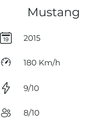

Ver carro


O Ford Mustang é um automóvel desportivo produzido pela Ford Motor Company. O carro foi ao público em 17 de abril de 1964 durante a New York World's Fair. O Mustang, apesar de ter sofrido grandes alterações ao longo dos anos é a mais antiga linha de automóveis da Ford.